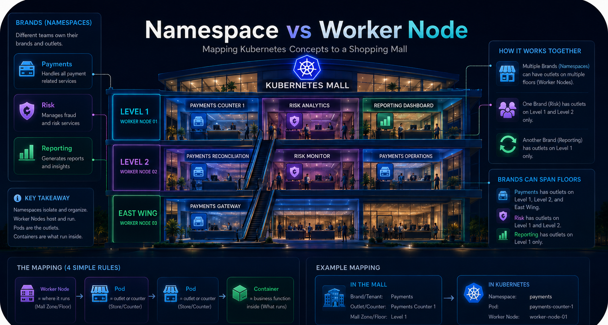
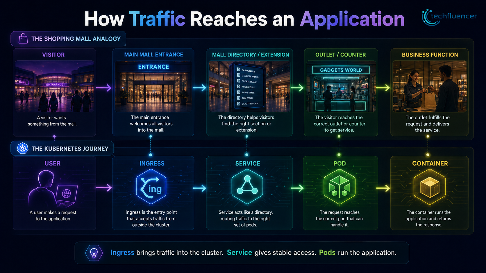
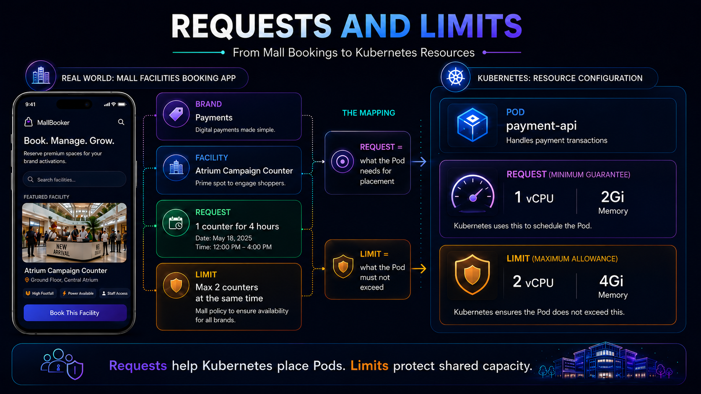

01 · Why this mental model
There are many Kubernetes tutorials. This one is about memory.
There are already many excellent articles, videos and training materials on Kubernetes. This article is not trying to say something completely new. Instead, it explains Kubernetes in a way that is easier to remember.
When I learn something complex, I like to create a mental map. A mental map helps me connect concepts together instead of memorizing them as separate definitions. Kubernetes has many terms: control plane, worker node, namespace, Pod, Deployment, Service, Ingress, StorageClass, PVC, PV, NetworkPolicy, requests and limits.
Each term is manageable by itself. The challenge is connecting them. So for this article, let us use one simple mental model: Kubernetes is like a smart shopping mall.
By the end, you should be able to explain Kubernetes using one connected story: the mall, the management office, the floors, the brands, the counters, the directory, the storage room, and the access rules.
02 · Kubernetes architecture
The cluster is the entire mall. The control plane manages it.
A Kubernetes cluster is the full environment where applications run. It includes the management system, the machines, the applications, the network, the storage, and the policies. In our analogy, the Kubernetes cluster is the entire shopping mall.
Every mall needs a management office. The management office does not sell coffee, clothes or electronics. It manages the mall. The Kubernetes control plane works in the same way. It decides what should run, where it should run, how many copies should exist, and what to do when something fails.
The scheduler is like the leasing and space allocation team. If a brand wants a new counter, the mall checks which floor has space, power, and the right conditions. Kubernetes does the same when placing a Pod on a worker node.
The controller manager is like the operations supervisor. If the plan says three counters should be open and only two are running, it takes action to restore the expected state.
03 · The most important clarification
Namespace is who owns it. Worker node is where it runs.
This is one of the most useful distinctions for infrastructure and platform teams. A worker node and a namespace are not the same thing.

Imagine a business unit called Payments. Payments may need more space. It can have one counter on Level 1, one reconciliation counter on Level 2, and one API counter in the East Wing. The brand is not the floor. The brand uses space on one or more floors.
Payments uses multiple mall locations.
Brand / Tenant: Payments
Outlet / Counter: Payments API Counter
Mall Zone / Floor: East Wing
Namespace: payments
Pod: payment-api
Worker Node: worker-node-03The simple memory hook is: Namespace = who owns it. Worker node = where it runs. Pod = the running outlet or counter. Container = the business process inside the outlet.
04 · Workload building blocks
Pods are counters. Containers are the business running inside them.
A Pod is the smallest deployable unit in Kubernetes. Most of the time, one Pod runs one main container. In the mall analogy, a Pod is an outlet, counter or store unit. The container is the business function running inside it.
A Deployment is not a single Pod. A Deployment is a plan. It tells Kubernetes how many copies should be running and how those copies should be updated.
During normal hours, keep 3 Payments counters open. During a campaign, increase to 5 Payments counters. When upgrading the counter setup, replace counters gradually so service does not stop.
Under the hood, a Deployment creates a behind-the-scenes manager called a ReplicaSet. The ReplicaSet keeps the requested number of Pods running.
So if a Deployment says replicas: 3, the ReplicaSet ensures that exactly three payment-api Pods stay available. If one Pod fails, a replacement Pod is created.
kubectl get all, you may see a resource like replicaset.apps/payment-api-xxxxx. That is expected. It is the manager created by the Deployment to maintain the Pods.
05 · Services and traffic
Service gives a stable directory number. Ingress brings visitors into the mall.
Pods are temporary. They can be created, deleted, moved or replaced. Their IP addresses can change. A Service gives a stable way to reach changing Pods.
In a mall, a counter may change staff or move internally, but the mall directory can still show one stable contact point. In Kubernetes, the Service is that stable network identity.

Labels and selectors make this work. Labels describe Pods, and selectors find matching Pods. A Service can route traffic to all Pods with a matching label, such as app: payment-api.
06 · Storage fundamentals
StorageClass is the blueprint. PVC is the request. PV is the assigned storage.
Not every application is stateless. Some applications need data to stay even if the Pod restarts. Examples include databases, file upload services, message queues and stateful applications.
Pods are temporary. If data lives only inside a Pod, it may disappear when the Pod is deleted. That is why Kubernetes has persistent storage concepts.

The important idea is dynamic provisioning. Without a StorageClass, the mall admin would need to manually build every storage room ahead of time. That is like static provisioning. With a StorageClass, the mall has a blueprint. When a tenant submits a storage request, the platform can automatically create and assign the right storage room.
In Kubernetes language, a Pod uses a PersistentVolumeClaim to ask for storage. A StorageClass describes what kind of storage should be created. Kubernetes then binds that request to a PersistentVolume, either from existing storage or by dynamically provisioning new storage through the storage provider.
07 · Resource governance
Requests help with placement. Limits protect shared capacity.
Every Pod needs CPU and memory. But a Kubernetes cluster has limited capacity. If one workload consumes too much, it can affect others.
A request tells Kubernetes the minimum CPU or memory the Pod needs. The scheduler uses this information to place the Pod on a suitable worker node. A limit controls the maximum usage the container is allowed to reach.

CPU and memory behave differently when they hit limits. CPU is a compressible resource. If a container tries to use more CPU than its limit, Kubernetes throttles it, which means it slows down. Memory is different. If a container tries to exceed its memory limit, it can be terminated with an OOMKilled error to protect the rest of the node.
08 · Configuration and health
ConfigMaps, Secrets and probes keep the application usable.
Applications need configuration such as environment names, API endpoints, feature flags and log levels. Kubernetes stores non-sensitive configuration in ConfigMaps. Sensitive information such as passwords, tokens and certificates belongs in Secrets.
Health probes help Kubernetes understand whether an application is alive and ready. Liveness asks: is it alive? Readiness asks: can it serve traffic now?
- The platform team creates the payments namespace.
- The application team creates a Deployment to run three copies of payment-api.
- The Deployment creates a ReplicaSet, and the ReplicaSet maintains the Pods.
- The scheduler places the Pods on suitable worker nodes.
- Each Pod runs the payment-api container.
- A Service gives stable access to those Pods.
- Ingress exposes the application externally.
- PVC provides persistent storage if needed.
- NetworkPolicy controls who can talk to whom.
- Requests and limits protect shared CPU and memory.
- The control plane watches everything and maintains desired state.
09 · Hands-on example
Read the story in YAML.
This simple example creates a namespace, a Deployment and a Service. The Deployment requests 1 vCPU and 2Gi memory, with a limit of 2 vCPU and 4Gi memory.
apiVersion: v1
kind: Namespace
metadata:
name: payments
---
apiVersion: apps/v1
kind: Deployment
metadata:
name: payment-api
namespace: payments
spec:
replicas: 3
selector:
matchLabels:
app: payment-api
template:
metadata:
labels:
app: payment-api
spec:
containers:
- name: payment-api
image: nginx:latest
ports:
- containerPort: 80
resources:
requests:
cpu: "1"
memory: "2Gi"
limits:
cpu: "2"
memory: "4Gi"
---
apiVersion: v1
kind: Service
metadata:
name: payment-api-service
namespace: payments
spec:
selector:
app: payment-api
ports:
- port: 80
targetPort: 80In this YAML, the namespace is the Payments brand account. The Deployment is the counter availability plan. The ReplicaSet is the behind-the-scenes manager. The Pods are the running counters. The Service is the stable directory number.
10 · Knowledge reinforcement
Check the mental model.
Question 1
Which statement best explains the difference between a Worker Node and a Namespace?
- Why B is correct: A Worker Node provides runtime capacity. A Namespace provides logical ownership and separation.
- Why A is wrong: It reverses the idea. Worker Nodes are runtime locations; namespaces are logical boundaries.
- Why C is wrong: Namespaces do not run containers. Pods run containers, and Pods run on Worker Nodes.
- Why D is wrong: Worker Nodes provide compute capacity for running Pods, not just storage.
Question 2
What does a Deployment create behind the scenes to keep the requested number of Pods running?
- Why C is correct: A Deployment manages a ReplicaSet, and the ReplicaSet maintains the required number of Pods.
- Why A is wrong: A Service provides stable network access; it does not maintain Pod replicas.
- Why B is wrong: A PersistentVolume provides storage, not Pod replica management.
- Why D is wrong: Ingress handles external HTTP/HTTPS routing into the cluster.
Question 3
Why do we use a Service in Kubernetes?
- Why B is correct: Pods can be created, deleted and replaced. A Service gives a stable network identity for those Pods.
- Why A is wrong: Storage is handled using PV, PVC and StorageClass.
- Why C is wrong: Deployment and Service solve different problems. Deployment manages rollout and replicas; Service exposes Pods.
- Why D is wrong: Worker Nodes are part of the cluster infrastructure. Services do not create them.
Question 4
What is the main benefit of a StorageClass?
- Why B is correct: A StorageClass defines the type of storage and can be used for dynamic provisioning when a PVC asks for storage.
- Why A is wrong: External access is handled by Services and Ingress.
- Why C is wrong: StorageClass and Service solve different problems.
- Why D is wrong: The scheduler decides which node should run a Pod.
Question 5
What happens when a container hits its CPU limit versus its memory limit?
- Why B is correct: CPU is compressible, so excess usage is throttled. Memory is not compressible in the same way, so crossing the limit can terminate the container with OOMKilled.
- Why A is wrong: Resource limits are enforced by Kubernetes and the container runtime.
- Why C is wrong: CPU and memory limits do not delete namespaces or create Services.
- Why D is wrong: CPU and memory limits affect compute resources, not storage.
11 · Architecture challenge
Design a mall for Payments, Risk and Reporting.
A company has three application teams: Payments, Risk and Reporting. Each team wants to deploy applications on Kubernetes.
- Would you create separate namespaces for Payments, Risk and Reporting?
- Which applications should use Deployments?
- Which applications need Services?
- Which workloads need PVCs?
- Where would NetworkPolicy be useful?
- What resource requests and limits would you define?
- What should the platform team manage?
- What should the application team manage?
12 · Key takeaways
The foundation stays the same when we move to VKS.
- Kubernetes is easier to understand when concepts are connected together.
- A Kubernetes cluster is like a smart shopping mall.
- The control plane is the mall management office.
- Worker nodes are the physical floors or zones where workloads run.
- Namespaces are brand or tenant accounts, not physical locations.
- Pods are outlets or counters where containers run.
- A Deployment creates a ReplicaSet, and the ReplicaSet keeps the requested Pods running.
- Services provide stable access to changing Pods.
- StorageClass, PVC and PV make storage consumable through static or dynamic provisioning.
- CPU limits can throttle. Memory limits can cause OOMKilled restarts.
- Kubernetes is a desired-state system, not just a container launcher.
VKS builds on Kubernetes. It does not remove these concepts. When we later discuss Supervisor, VCF Namespace, Workload Cluster, VKr, storage policy and NSX/VDS networking, we will connect them back to this foundation.
Sources reviewed
Version validation
- Kubernetes official documentation — Nodes
- Kubernetes official documentation — Namespaces
- Kubernetes official documentation — Pods
- Kubernetes official documentation — Deployments
- Kubernetes official documentation — ReplicaSet
- Kubernetes official documentation — Services
- Kubernetes official documentation — Ingress
- Kubernetes official documentation — Persistent Volumes and Dynamic Provisioning
- Kubernetes official documentation — Resource Management for Pods and Containers
Version-validation date: 30 June 2026
Last-reviewed date: 30 June 2026